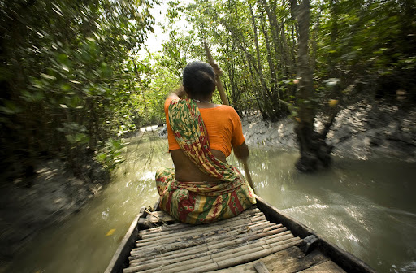

Lifestyle of people in Sundarbans

Sundarbans, the land where three great rivers merge, is the third most vulnerable delta in the world today. Sea level rise due to climate change, devastating cyclones, etc. are affecting this densely populated area. Realising the urgency, international agencies are working on issues like adaptability to cope with the new reality.
People in the Sundarbans reside in 53 islands, according to the Delta Vision 2050 document (WWF-1, 2011). It is a Unesco World Heritage Site. The area outside the protected National Park has been mostly used for agriculture.
The connection between global warming and sea level rise has been conclusively established by scientists, including those of the School of Oceanographic Studies at Jadavpur University, Kolkata.
The latter warns that in the Sundarbans, rising sea level and depletion of mangrove forests that act as a natural buffer against cyclones and rising water, could see more islands getting submerged. Like Ghoramara, Suparibhanga and Lohachara, which have wholly or partly been submerged in the sea.
From these islands, more than 30 thousand people were relocated to the Sagar island, a place of pilgrimage for Hindus, 25 km away. Now as more low lying areas are under threat, the continued migration could put a strain on the dedicated area in Sagar too, say experts. Incidentally, scientists point out that while globally, sea level rise due to climate change is usually at 1.2 mm per year, in Sundarbans it is much higher at 4.2 mm per year.